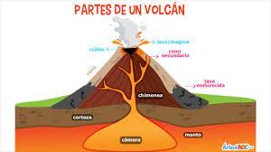
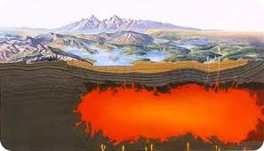

Que es un volcán?
Un volcán es un punto de la superficie de la tierra por donde sale material fundido, llamado magma, que se genera en el interior de la Tierra, y material que no es magma. Básicamente, un volcán es una manifestación de la energía interna de la Tierra.
Que es el magma?
El magma volcánico es una combinación de roca fundida y compuestos sólidos y volátiles que se forman en el interior de la Tierra. Esta sustancia es muy inestable y puede contener también burbujas de gas y cristales en suspensión.